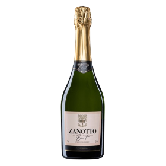

Sinônimo de elegância e glamour, ele é versátil, leve, saboroso e pode ser combinado com vários pratos.
Com origem na região de Provença, na França, a bebida possui uma variedade de texturas, cores e sensações que fazem qualquer um se apaixonar.
E o melhor: é uma ótima opção e uma alternativa diferenciada para os dias quentes do nosso rigoroso verão tropical!
Vinho Branco Chasperry
Este vinho branco seco da Vinícola Celestial é como um raio de sol em uma taça. Com aromas de frutas cítricas maduras e notas florais delicadas, seu paladar é refrescante e equilibrado, com uma acidez vibrante e um final persistente que evoca a sensação de um dia ensolarado.
Sereno do Vale Tinto Encorpado
O Sereno do Vale da vinícola Montanhas Encantadas é um vinho tinto encorpado que cativa os sentidos. Com sua cor profunda e aromas de frutas vermelhas maduras, baunilha e especiarias sutis, este vinho revela camadas de sabores complexos, com taninos suaves e um final longo e aveludado.
Brisa do Rio
Brisa do Rio é um vinho rosé refrescante da Casa do Rio, perfeito para dias de verão e momentos descontraídos. Com sua cor rosada delicada e aromas de frutas vermelhas frescas, este vinho encanta o paladar com sua acidez vibrante e notas de frutas tropicais, deixando um final suave e agradável.
Noite Estrelada
Noite Estrelada da Vinhas Encantadas é um vinho tinto leve e versátil, ideal para acompanhar uma variedade de pratos. Com aromas de frutas negras maduras e notas sutis de especiarias, este vinho tem uma textura macia e taninos suaves, proporcionando um final elegante e fácil de beber.
Aurora Porlle
Aurora Porlle da Terras do Sol é um vinho espumante brut que celebra a alegria e a vivacidade. Com sua efervescência delicada e aromas de frutas brancas e flores brilhantes, este vinho brinda ao paladar com uma acidez refrescante e uma cremosidade envolvente, terminando com elegância e sofisticação.

Brisa Mediterránea
Brisa Mediterránea da Viñedos del Sol é um vinho branco fresco que captura a essência do litoral espanhol. Com aromas de frutas brancas e cítricas, este vinho é leve e vibrante no paladar, com uma acidez refrescante e um final persistente que evoca a brisa do mar.